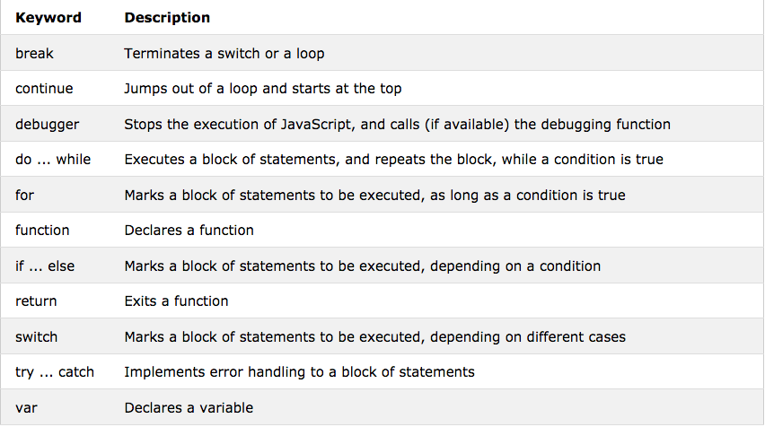

Mientras que HTML trata el contenido de las paginas web y CSS trata la organizacion y estilos de estas, JavaScript se encarga del comportamiento de ls paginas; entre las funciones basicas de JavaScript se encuentran cambiar atributos,contenidos y estilos, asi como mostrar y ocultar elementos de HTML
Al igual que CSS, JS se puede escribir en el head, dentro del body o en un archivo externo al HTML; tanto en el head como en el body, las instrucciones del JS se colocan dentro de la etiqueta y para llamar un archivo externo de JS se coloca en el head.
Los resultados de JS se pueden mostrar con los siguientes métodos:
Las siguiente son las palabras clave usadas en JS:
Recuerda que las declaraciones siempre se separan por ;, los comentarios de una linea se ponen con // y los parrafos enteros con /* */
Las variables se usan dentro de JS para almacenar informacion y se pueden declarar escribiendo var x=valor; y puedes darle un valor a diferente variables en una sola declaracion, tambien es posible usar estas variables para hacer operaciones algebraicas dentro de JS. Los operadores son los mismos que se usan dentro de la aritmetica tradicional y siguen la jerarquia de operaciones pero puedes consultarlos todos Aqui Las variables pueden ser numeros, strings, objetos (se coloca entre llaves y la sopiedades separadas por comas), booleanos, arreglos (entre corchetes) o indefinido (undefined), puedes revisar el tipo de variable con typeof.
Una funcion es un una linea de codigo diseñada para cumplir una operacion especifica a traves de operadores y variables, esta operacion se cumple cuando la funcion es "llamada" la sintaxis es la siguiente:
function name(parameter1, parameter2, parameter3) {
code to be executed
}
Una funcion puede llamarse cuando un evento especifico sucede, a traves del coidgo de JS o automaticamente; hay que recordar que se debe escribir return al final del codigo para declarar el resultado que queremos obtener de la operacion; para llamar la funcion a traves de getElement es necesario escribir funcion(), ya que si no se pone el parentesis, te va a regresar unicamente la definicion de la funcion, ademas, puedes asignarle funciones a variables.
Un objeto tiene propiedades y metodos, los metodos son operaciones que se hacen entre las propiedades y se colocan como una funcion, por ejemplo:
fullName : function() {
return this.firstName + " " + this.lastName;
}
UN evento HTML puede ser algo que el navegador o elusuario hace, tal como hacer click en algun lugar o cambiar la entrada de un campo. Por ejemplo, para crear un boton que te regrese la hora puedes usar el siguiente codigo: < button onclick="document.getElementById('demo').innerHTML = Date()">The time is?< /button>. Algunos de los eventos mas comunes de JS son los siguientes:
Los strings tienen metodos propios separados de los demas elementos: con indexOf() (al igual que con search()) puedes encontrar donde empieza un texto especifico dentro de un string y con lastIndexOf() donde termina; el metodo slice() te regresa un pedazo de texto especificado entre ciertas posiciones, al igual que substr(); el metodo replace() se usa para reemplazar una cadena de caracteres con otra; puedes usar .toUpperCase() y .toLowerCase para convertir un texto a mayusculas y viceversa; el metodo concat () sirve para unir dos strings; .charAt regresa el caracter en una determinada posicion dentro de un string; puedes convertir un string en un arreglo con el metodo split()
Al igual que un string, los numeros tienen metodos propios, tales como: toString(), que convierte un numero a un string; toExponential(), que convierte un numero normal a uno exponencial con el numero de decimales deseados dentro del parentesis; toFixed(), que redondea un numero con el numero de decimales deseados dentro del parentesis; toPrecision(), que hace lo mismo que toFixed pero devuelve un numero redondeado a una longitud determinada; valueOf(), que te regresa el valor numerico de una variable. Respecto a las funciones matemáticas todas son estaticas.
Hay 4 maneras de iniciar una fecha:
new Date() new Date(milliseconds) new Date(dateString) new Date(year, month, day, hours, minutes, seconds, milliseconds)
Los siguientes son los metodos para fechas:
El arreglo es una variable especial que puede contener mas de un solo valor y se introduce en forma de lista. Los metodos son los siguientes: arreglo.join(), que une los elementos de un arreglo en un string con el separador dentro del parentesis; .pop(), que elimina el ultimo elemento del arreglo; .puch (), que agrega el elemento entre parentesis al arreglo; .shift(), que elimina el primer elemento del arreglo; .unshift(), que agrega un elemento al principio del arreglo; puedes cambiar un elemento en la posicion i con arreglo[i]="Elemento nuevo"; delete arreglo[i], que elimina el elemento en la posicion i; .splice(i1,i2,E1,...,En) se usa para agregar varios elementos a un arreglo, donde i1 es la posicion donde seran agregados, i2 el numero de elementos que se van a eliminar y En los elementos a agregar; arreglo1.concat(arreglo2), que concatena los arreglos; .slice() toma un elemento de un arreglo para ponerlo en otro.
Switch funciona como un condicional por casos, dentro de las llaves escribes case #: bloque a ejecutar;break; etc. , donde en los bloques a ejecutar escribes la accion para cada caso; la declaracion break interrumpe un loop y continua con el codigo, mientras que la declaracion continue interrumpe una sola iteracion del loop, si se cumple una condicion, y luego continua con la siguiente iteracion. Ademas, puedes poner alguna etiqueta despues del break para salir de un bloque de codigo especifico.